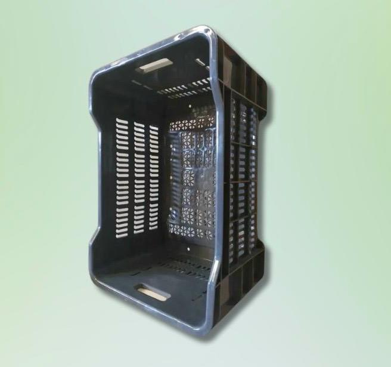

C'est un pulvérisateur qui est à la fois automatique et manuel
Par exemple, après un travail dur et intense, la batterie peut se décharger. Dans ce cas on peut
utiliser la fonction manuelle pour finaliser le travail
Matériel agricole
PULVERISATEUR PULMIC RAPTOR
Caractéristiques :
A une capacité de 16 litres
Bretelles rembourrées et réglables
Lance en fibre de verre, poignée ergonomique
Est fait pour les phytosanitaires, herbicides et traitements foliaires
Matériel agricole
PULVERISATEUR A MOTEUR 7 HP
Caractéristiques :
Une capacité de 300 Litres
Un moteur à essence très puissant
Un chariot pratique et maniable
Haute portée pour un traitement efficace
Matériel agricole
ATOMISEUR PULMIC RAPTOR
Caractéristiques :
Très solide
Pompe d'impulsion à double piston
Capacité du réservoir de liquide: 14 litres
Capacité du réservoir de carburant: 1.3 litres
Matériel agricole
TARIERE THERMIQUE
Caractéristiques :
3 mèches: petite, moyenne et grande
Très puissante et robuste
Faible consommation
Mèche de 80 CM
Matériel agricole
DEBROUSSAILLE THERMIQUE MULTI FONCTION
Caractéristiques :
Indispensable pour couper l'herbe et les broussailles
Très efficace
Très polyvalent
Matériel agricole
TRONÇONNEUSE ROBUSTE
Caractéristiques
Adapté à la délimitation
Cloture de chantier

Matériel agricole
CAGEOT AGRICOLE POUR RECOLTE
Caractéristiques :
Permet la circulation de l'air pour éviter la pourriture
Capacité de s'empiler les uns sur les autres sans écraser les produits
Poignées ergonomiques pour faciliter le soulévement manuel
Matériel agricole
MOTOCULPTEUR
Caractéristiques :
Multifonctionroule
Très solide et résistant
Matériel agricole
ROULEAU TUYAU ARROSAGE
Caractéristiques :
Diamètre 32
Très solide et résistant
Matériel agricole
ROULEAU TUYAU ARROSAGE
Caractéristiques :
Diamètre 19
Très solide et résistant
Matériel agricole
ROULEAU GOUTTE A GOUTTE
Caractéristiques :
400 m
Pour arbre fruitier
Matériel agricole
ROULEAU GOUTTE A GOUTTE
Caractéristiques :
2300 m
Pour cultures maraîchères
Matériel agricole
GOUTTE A GOUTTE LASER SPRAY ET DEPART
Caractéristiques :
Rouleau de 200 m
Diamètre 32
Matériel agricole
ARROSEUR ROTATIF
Caractéristiques :
Ajustable
Se branche à un tuyau d'arrosage standard
Les jets d'eau tournent pour couvrir une large zone